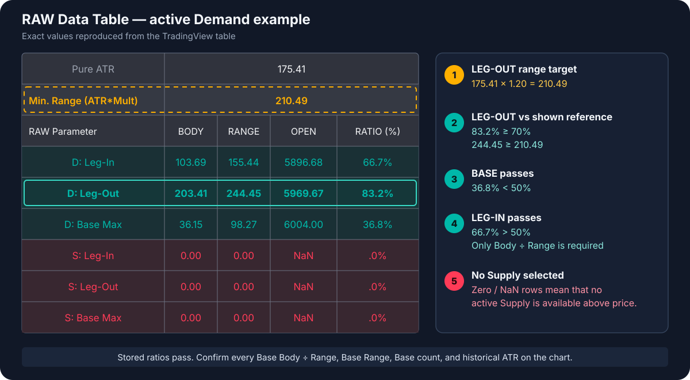

RAW Data Table — Zone Debugging Guide
The RAW Data Table shows the stored candle measurements for the nearest active Demand zone below price and the nearest active Supply zone above price.
Enable it with Visual Settings → Show RAW Data Table. The table appears in the top-right corner.
Demand example

The example contains an active Demand zone, so the three D: rows are populated. The Supply rows contain zeros and NaN, which means there is no active Supply zone available above current price.
The body and range values belong to the selected zone. Pure ATR and Min. Range (ATR*Mult) belong to the latest chart bar. The range comparison below reproduces the original detection check only when the Leg-Out is the Bar Replay endpoint; for an older zone it is a comparison with the current market reference.
1. Establish the Leg-Out range target
The first two rows show:
Pure ATR = 175.41Min. Range (ATR*Mult) = 210.49
With the default Min. Leg-Out Range (ATR ×) = 1.20:
175.41 × 1.20 = 210.49
The Leg-Out therefore needs a complete range of at least 210.49.
2. Check the Leg-Out
The D: Leg-Out row shows:
| BODY | RANGE | OPEN | RATIO (%) |
|---|---|---|---|
203.41 |
244.45 |
5969.67 |
83.2% |
The body condition passes, and the range exceeds the reference currently shown in the table:
- Leg-Out Body Size (% of Range):
203.41 ÷ 244.45 = 83.2%, above the default minimum of70%. - Complete range:
244.45, above the required210.49.
3. Check the Base
The D: Base Max row shows:
| BODY | RANGE | OPEN | RATIO (%) |
|---|---|---|---|
36.15 |
98.27 |
6004.00 |
36.8% |
The displayed ratio is:
Largest Base body ÷ that Base candle's range = 36.15 ÷ 98.27 = 36.8%
This passes the default Max. Base Body Size (% of Range) = 50% because 36.8% < 50%.
BODY, RANGE, and OPEN in Base Max
BODY, RANGE, and OPEN all belong to the accepted Base candle with the largest body. From v2.10.6, the Base RATIO is that candle's Body ÷ Range value; it is never divided by the Leg-Out body.
Every Base candle must satisfy Body ÷ its own Range < 50%. The aggregate D: Base Max row shows one selected Base candle, so verify the other Base candles with Candle Metrics Debug. Exactly 50% fails.
The RAW table does not show the number of Base candles. Count them on the chart. With the current scan behavior, the default Max. Base Candles = 4 allows up to three actual Base candles before the Leg-In must appear.
4. Check the Leg-In
The D: Leg-In row shows:
| BODY | RANGE | OPEN | RATIO (%) |
|---|---|---|---|
103.69 |
155.44 |
5896.68 |
66.7% |
The Leg-In condition passes:
- Leg-In Body Size (% of Range):
103.69 ÷ 155.44 = 66.7%, strictly above the default minimum of50%.
Since v2.1.0, Leg-In body size is not compared with Base body size.
Result for this example
| Formation part | Test | Required | Example | Result |
|---|---|---|---|---|
| LEG-OUT | Body ÷ Range | minimum 70% |
83.2% |
PASS |
| LEG-OUT | Complete range vs shown ATR reference | minimum 210.49 |
244.45 |
PASS* |
| BASE MAX | Body ÷ own range | strictly below 50% |
36.8% |
PASS |
| OTHER BASE CANDLES | Each body ÷ its own range | strictly below 50% |
inspect each Base candle | NOT EXPOSED IN AGGREGATE ROW |
| LEG-IN | Body ÷ Range | strictly above 50% |
66.7% |
PASS |
The stored Leg-Out, selected Base, and Leg-In values pass. The remaining chart checks are the other Base candles' body/range ratios, every Base range versus the Leg-Out range when that checkbox is enabled, the number and order of Base candles, and, for an older zone, the historical ATR reference.
* The range result reproduces the historical detection decision only when 210.49 is captured with the Leg-Out as the replay endpoint.
Match the rows to candles on the chart
Use the OPEN column as the candle identifier:
- Leg-In opens at
5896.68. - Leg-Out opens at
5969.67. - The Base candle with the largest body opens at
6004.00.
OPEN helps locate the candles. It is not a pass/fail condition.
Which zone is displayed
The table is not a zone selector. On the latest chart bar it automatically displays:
- the active Demand zone nearest below current price;
- the active Supply zone nearest above current price.
Scrolling left or clicking another box does not change the selection. Pending, broken, already tested, and rejected zones are not available in this table. Use Bar Replay when you need the table to evaluate an earlier chart moment.
Debug an older or missing zone
Pure ATR and Min. Range (ATR*Mult) belong to the latest chart bar. They are not the historical values of every old zone shown on the chart.
For an older or missing formation:
- Start Bar Replay before the suspected formation.
- Advance until its Leg-Out is the replay endpoint.
- Record
Pure ATR,Min. Range (ATR*Mult), and the Leg-In, Base, and Leg-Out candle values. - Apply the visible calculations used in the example above.
- Count the Base candles and use Candle Metrics to verify
Body ÷ Range < 50%for each one. WhenRequire Base Range ≤ Leg-Out Rangeis enabled, also verify that range comparison separately for every Base candle. - Advance one bar and check whether the zone appears and becomes the nearest active zone in the RAW table.
The table cannot display a candidate rejected before zone creation. In that case, Bar Replay and the manual candle checks are the correct debugging workflow.
Since v2.2.0, also compare the Leg-Out extreme with the original Base distal. Demand is rejected when Leg-Out Low ≤ Base Distal; Supply is rejected when Leg-Out High ≥ Base Distal. This candidate-level rejection is not exposed in the aggregate RAW table because no Zone object is created.
Since v2.3.0, native LTF Base candles can be required to satisfy Base Range ≤ Leg-Out Range. From v2.10.7 this rule is controlled by an enabled-by-default checkbox. The RAW Base Max row exposes only the range paired with the largest Base body, so use Candle Metrics to inspect every Base candle; a failing candidate is rejected before a Zone object exists.
For the complete detection-input reference, open Zone Detection Settings at a Glance.